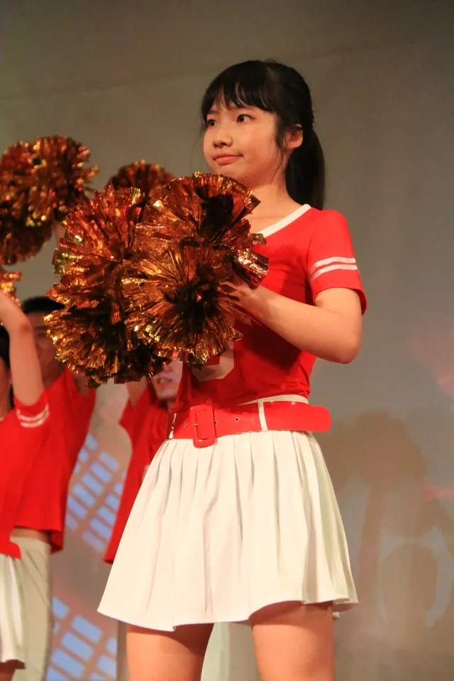
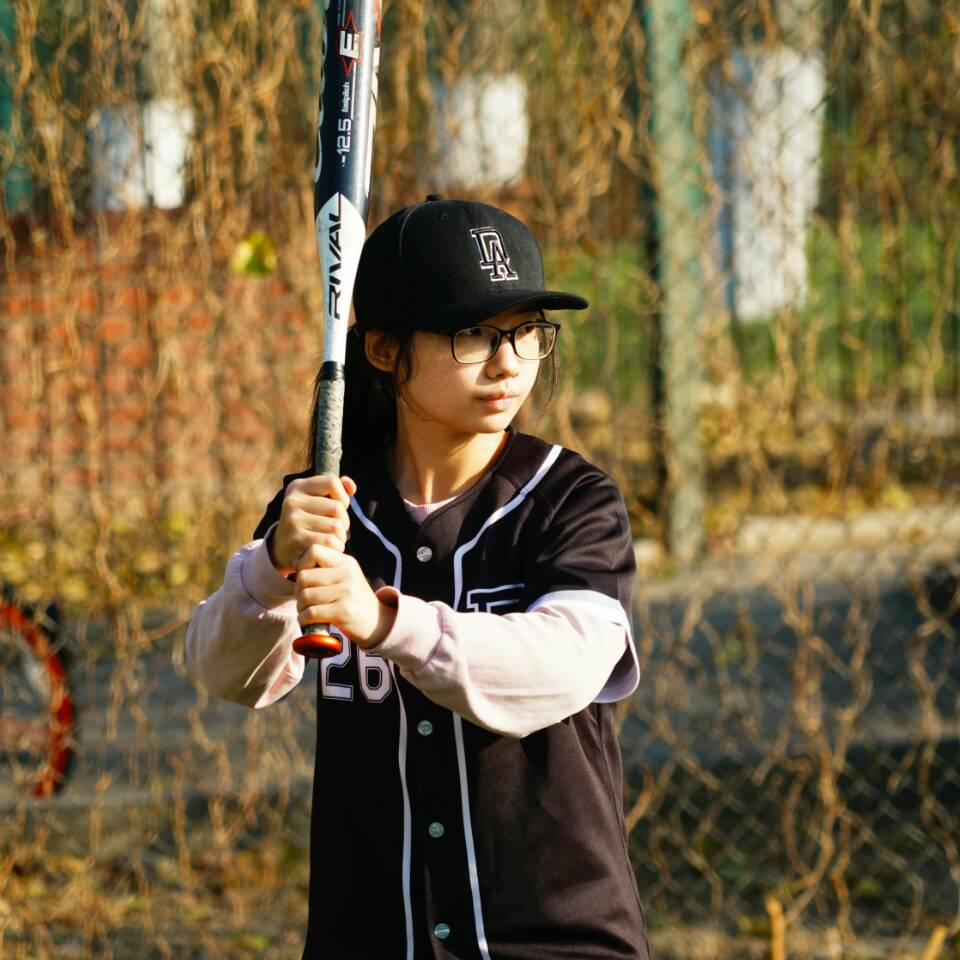

相信在物理系参与社工的同学一定认识欣彤姐姐，大家印象中的她一定是优秀又全能的形象。但是其实欣彤姐姐在学习社工生活中也有着可爱有趣的一面，我们采访了欣彤姐姐和她的身边的朋友们，为你们呈现一个你熟悉或不熟悉的欣彤姐姐。
个人简介
学习篇
大家都知道，欣彤姐姐是学霸一枚。2012年在保送清华大学基科班的情况下，依旧斩获了广东省理科高考状元。在清华，她依旧保持着学霸的风范。前三年学分绩95分，推研时的排名专业并列第一。据欣彤姐姐透露，她本科成绩最低的一门是龚光鲁老师的《高等代数》，79分。想必是勾起了选过龚爷爷概率论的同志们的惨痛回忆
基科班都是推土机。
——曾经在信号系统课上，一个本来可以套用公式解的题，欣彤姐姐从定义整个推推推推了一遍，最终获得满分后出现的传言。
尽管欣彤姐姐现在是在自动化系读博，但她其实还有过一段凝聚态的seminar经历。早在大二的时候，她就加入周树云老师的课题组（果然优秀的人相互吸引）。虽然周老师并不建议，但是欣彤姐姐在没有量子力学、统力力学的基础上，就直接修了朱邦芬老师的《固体物理》。她觉得这门课很“奇妙”，也从书上和老师的讲义里挑了不少错也顺便加了不少分。每上一堂固体物理，每次组会中可以理解的内容就多了一些，虽然现在不做物理了，但她仍觉得固体物理是“本科时印象最深刻的一门课”。
欣彤是美貌与智慧并存的仙女小姐姐。（好假呀）
——张一铭
欣彤姐姐与物理系学生会
欣彤姐姐后来发现自己并不很喜欢实验室那种“板凳要坐十年冷”的科研状态，感到困惑的她和许多辅导员都请教过，尤其是从当时团委书记崔力文那里受益匪浅。她看报纸（？!）时觉得BAT斗来斗去很感兴趣，因此选择进入到自动化系的组里，“到哪里科研都是科研，但是感觉这个行业更热闹，很有意思。”欣彤姐姐认为她最理想的状态是“在公司中科研”。
一只善良、可爱的程序猿，拖延症中晚期患者，时常处于“石乐志”和“智商爆表”的叠加态。
——潘柏林（欣彤姐姐男朋友）
欣彤姐姐当前的科研方向是模式识别和机器学习。通过足够的数据去训练一个机器学习模型，让它能够描述出给定的一张图片在说什么（image caption）。相关的应用在盲人眼镜，或者是军用项目（雷达遥感数据直接生成文字，这样相关人员就不用去看图了）中都有所涉及。
(欣彤姐姐)很有智慧。就当然那个学业上的能力就不用说了，我们都知道，我觉得智慧主要指的是为人处事的一个智慧。我对她这一点一直都特别的钦佩。
——蒋继研
体育篇
众所周知，在清华的学霸通常也还都是体霸，我们的欣彤姐姐也并不例外（虽然她自己并不这样认为）。欣彤姐姐在本科时参加了物理系系羽毛球队，参与过多次马杯。她还参加过物理系健美操队，虽然只是临时拉起来的队伍，但是物理系健美操队也在林秋帆队长的带领下，获得了第十名的成绩，还在九里香学生节中表演过。
（本科时）上射击课，总是幻想自己能捡到把枪，射击歹徒，非常中二。
——余欣彤
研究生的时候被实验里的学长拉到了自动化系的垒球队。虽然之前体育课上过垒球课，也围观过棒球比赛，但是最开始总是看到球来就躲，接不到球，还特别喜欢尖叫，经常被吐槽。现在已经进步到了“勉强不拖后腿的存在”，跟着自动化系大腿们拿了今年马杯垒球的冠军。
一直非常敬佩欣彤姐，学习、社工、卖萌、跳舞，每一样都做得很棒。
——纪楚廷
|  |  |
运动中的欣彤姐姐
社工篇
欣彤姐姐作为一个超级社工达人，社工经历十分丰富，在系团、系会、校团、校会都曾任职过。参与社工的心态也自然而然随着年龄而变化，开始是想怎么把事做好，后来注重感情建设、人才培养，把人做好，把团队做好。不少前辈的鼓励帮助都让她受益匪浅，后来很欣慰也能给手底下的小朋友很多积极的影响。
彤姐让团委这个地方变得更加愉快轻松，也更有集体的温度，很感谢这份温度带给我的归属感。 ——陶辰昕
欣彤姐姐表示，五年社工经历中最爽的一件事要数“九里香”学生节了。办完学生节十分开心，倒不是因为办好而开心，而是开心再也不用担心会搞砸了。
郑重辟谣：有人谣传九里香结束后欣彤姐姐被三轮车拉回宿舍，真相是因为之前没怎么吃东西，所以毕业聚餐时胃痛，坐着同学的电动车回来的。
（余欣彤刚当团委书记的时候）我和她不熟，所以有点抵制，甚至有段时间故意不听她的话。 ——王云帆
我学习的榜样是我们物理系的团委书记“余欣彤”。
——王云帆特奖候选人宣传材料（初稿）
真香。
——王境泽
社工中最尴尬的事而是男生节的时候代表团委入寝给六字班干事送礼物，敲开门一阵嘘寒问暖后才发现自己脸盲认错了人，只能麻烦开门的同学将礼物转交给要送的团委同学。
在我佩服的清华物理系的诸多“怪物”里，欣彤姐姐要数头一个。
——笔者
欣彤姐姐与物理系团委
对于社工中经常出现的“分锅”、“甩锅”现象，欣彤姐姐表示：“我感觉不到甩锅现象，我手上的任务都很自然的分配给你们，我觉得用甩锅这个词是说明分出去的人心里有愧疚，被分的人心里不爽。我的内心没有以前那样愧疚了。”
给其他人甩锅我都会有愧疚感，但只对有个人没有任何的愧疚感——华信锐，他不管愿不愿意，嘴上都会表示很不愿意，所以对他有锅就甩。 ——余欣彤
爱情篇
你们是不是应该找一个谈过恋爱的人来设计这部分问题！ ——余欣彤
欣彤姐姐的男朋友是和她一个高中的清华学长。爱情故事可以参见《欣彤姐姐的爱情故事》。她觉得和男朋友之间最感动的事就是两个人在人生规划都一直为对方着想，非常的暖。
欣彤姐姐有一个特别有趣的习惯，不管什么话题，聊着都会聊到自己男朋友，比如说她明明可以说那家店的什么菜比较好吃，但是他会说那家店的什么菜，我上次和男朋友去的时候发现挺好吃的。 ——张一铭 在我曾是单身狗的时候，总是接受她的暴击，关键她还不是刻意说的，总是不经意间以一种平常的语气，给出单身狗的暴击。 ——蒋楠
惨遭“表情包化”的欣彤姐姐
男朋友也给过欣彤姐姐很多帮助。比如当初固体物理学的很艰难，也是在男朋友的鼓励下才没有退课。社工上欣彤姐姐也会听取男朋友的意见，做决定有时候还是会咨询过他的建议。物理系现在社工做的这么好，还是应当感谢兄弟院系材料学院的帮助。
Q: 要是团委书记学生会主席单身，得不到另一半的帮助怎么办？ A: 他们可以摔跤啊。
为了能跟男朋友有更多共同语言，欣彤姐姐也尝试过许多。因为男朋友是相关方向的，她曾经试图翻了几页微观经济学，听上经双的男朋友给她“上课”，不过最后也没学进去。再比如说三国杀，欣彤姐姐也是为了男朋友学的，但是一直也不喜欢这个游戏。为了男朋友而尝试的、最终能成为自己的爱好的，还是要数FGO（Fate Grand Order）了。
她和她男朋友打三国杀总是输，余欣彤输不起，就不愿意再打了。 ——梁赋珩
FGO是被男朋友强行拉入坑的（他大概是想找一个豹跳对象？），也被男朋友逼着看完了Fate Zero的动画，“第一集那段二人转不被人逼着怎么看得下去啊！”。FGO游戏也一开始觉得很无聊，直到男朋友给她氪了一个福袋出了孔明才坚持玩下去（欧吃矛）。后来逐渐抽出旧剑、闪闪等“老公”，也越来越喜欢玩这个游戏了。（真香）因为FGO游戏，也开始逐渐理解了“死宅”们的心态，理解了男朋友从本科的现充变成了工作后的“死宅”。
潘栩栩 ——欣彤姐姐在FGO游戏中的名字，也是幻想以后有了孩子起的名字，并且把游戏账号也传给TA。
生活篇
当你不知道每次你不知道想去哪下馆子的时候，请打开欣彤姐姐的票圈，一定能找到图文无关的美食推荐帖。当然了，谨防狗粮。尽管欣彤姐姐一直在朋友圈试图塑造一个“吃货”的人设，但是和男朋友一起特别爱吃快餐，汉堡王、肯德基、麦当劳都是他们最浪漫的选择。
当说到选择清华的理由时，余欣彤调皮地问：“我可以说是因为清华的饭堂很好吃吗？” ——2012年对广东省理科高考状元、清华新生余欣彤的采访。
脑洞很大的欣彤姐姐做过无数神奇的梦。最有名的大家玩梗最多的要数关健吸毒被抓，她和时任学生会主席王嘉兴一起商量如何去把他“捞”出来。她还梦见过男朋友陪她一起参加四字班的毕业典礼，看到很多人要毕业，梦里就开始哭。
@关健 ——欣彤姐姐发的关于梦的朋友圈下边最常见的评论。
生活中，如果遇到压力大的事，欣彤姐姐则会选择通过“玩”来放松，比如玩游戏、看小说（网络言情《三生三世十里桃花》《微微一笑很倾城》）、刷剧（韩剧、美剧、日剧等等）。据一铭爸爸透露，欣彤姐姐喜欢一边洗衣服一边刷剧，经常一洗就是一小时。
天王盖地虎，欣彤一米五。宝塔镇河妖，欣彤长不高。 ——张海鹏 每次看到你，想到我女儿五年级就这么高了，我就特别开心。 ——张卫华老师
对于追星，一铭爸爸曾经这么形容欣彤姐姐“一个月换一个老公”，不过只是“白嫖”追星的欣彤姐姐并没有为偶像投入太多精力与金钱。除了三次元的明星，欣彤姐姐还有在《恋与制作人》喜欢老公李泽言，在FGO中更是有三个老公。
余欣彤看动漫会迷上里边的男主角，以至于他的男朋友都不愿意给她的推荐动漫了。 ——梁赋珩 她看什么都会迷上里边的男主角。 ——张一铭 诶余欣彤等等，别老看着广告牌大呼小叫啊，那个杨洋是你第几个老公来着，李易峰已经不算了是吗？另外旧剑是你大老公还是小老公这种事情，不要老是变来变去啊┑(￣Д ￣)┍ ——潘柏林（欣彤姐姐男朋友）
和欣彤姐姐一起去K歌的人都知道，欣彤姐姐是麦霸一枚。虽然她总是自谦唱歌跑调，但是依旧喜欢唱歌，在学校骑自行车的时候都会唱歌，在重庆实践的时候生着病都要去KTV。欣彤姐姐表示，“我最喜欢周杰伦和林宥嘉。”在KTV的拿手曲目则是周杰伦的《简单爱》。
“你们找的我这张照片还不够丑，你们可以放一张更丑的上去。” ——欣彤姐姐看到《时光是把杀猪刀》中的自己照片后的评价 “欣彤姐姐真是既可爱又巨。” ——负责排版该推送的施文
感谢这么可爱的欣彤姐姐这几年为物理系学生工作的辛勤付出。物理系的学生组织也和欣彤姐姐共同成长。今天是欣彤姐姐的生日，祝欣彤姐姐生日快乐！也祝退休后的欣彤姐姐能够专注科研，和男票更加恩爱，在FGO中欧气满满，生活继续充实快乐！
感谢受访对象：余欣彤、潘柏林、蒋楠、张海鹏、张一铭、梁赋珩、蒋继研、王云帆、纪楚婷、戴为、陶辰昕、虞晶帆、施文、瞿敬晨
问题设计：储著敏、肖恒圆 采访：储著敏、肖恒圆、秦浩然 文案：秦浩然 排版：储著敏
笔者负荆请罪： 这篇推送的采访部分是在六月完成的，原本打算用来纪念欣彤姐姐退休。但是因为笔者当时忙于毕业论文等杂事，错过了最佳的发推送时间。之后便一直拖延到了本学期，打算趁着欣彤姐姐过生日的机会发这篇推送。但是经过笔者与物理系团委的讨论，认为使用“清物语”公众号并不合适，因此拜托储图灵使用GitHub博客的形式进行发布。 在此，本人向欣彤姐姐，所有受访对象，所有期待过本篇推送的同学们，以及为了这篇推送付出不少心血的图灵和肖神致歉！ 最后，祝欣彤姐姐生日快乐，再说一句晚到的退休快乐！祝物理系团委在王云帆书记的带领下越办越好！祝物理系团委宣传组的事业蒸蒸日上！ 秦浩然